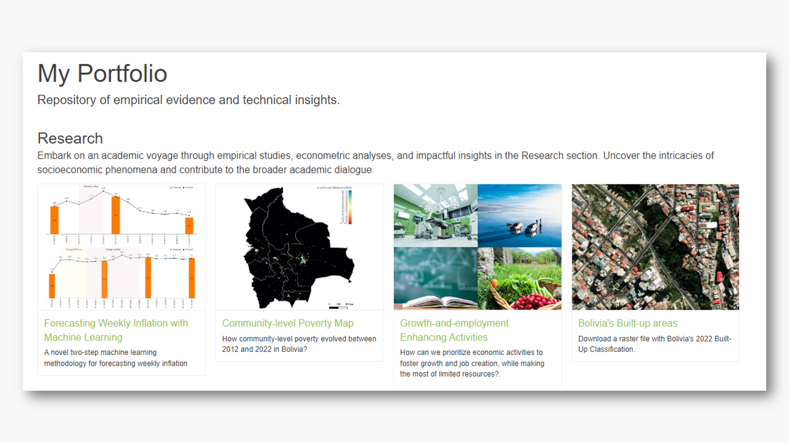

My Website - Osmar Bolivar Rosales
A Little About Myself.
As an economist specializing in economic research, policy analysis, and data-driven decision-making, I am passionate about harnessing the transformative potential of AI and advanced econometric methods to address complex macro and microeconomic challenges.

